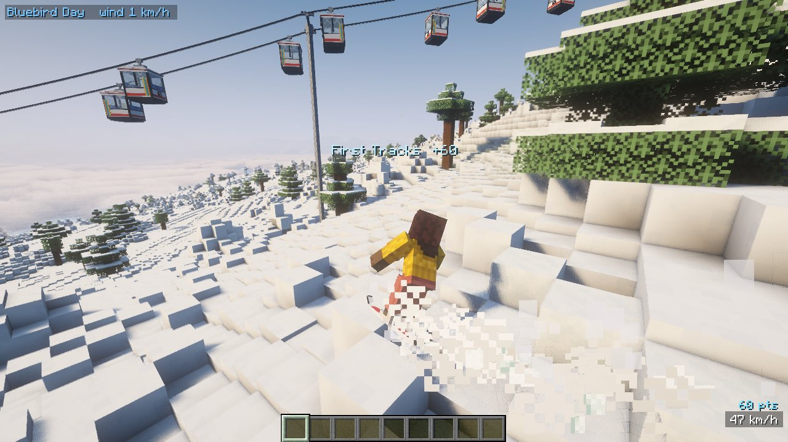

Skiing that feels like skiing
Lean onto an edge with A D and carve. Dig in with S to scrub speed, tuck with W. Powder floats you once you're moving and leaves real tracks behind.
- First Tracks combos for linked turns in untouched snow
- Ollies, spins, flips and grabs, with landings you can stomp or crash
- Corduroy, moguls, ice and slush all ride differently